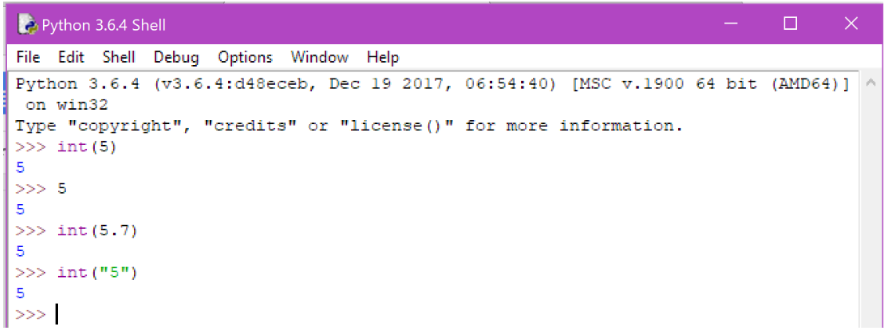
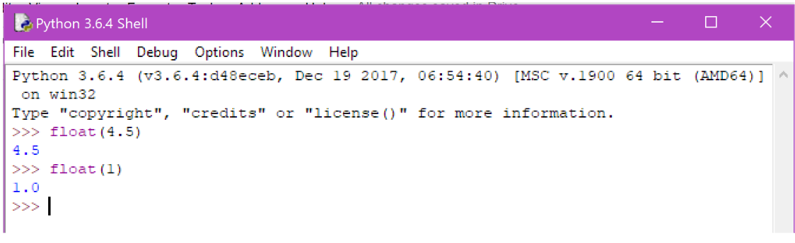
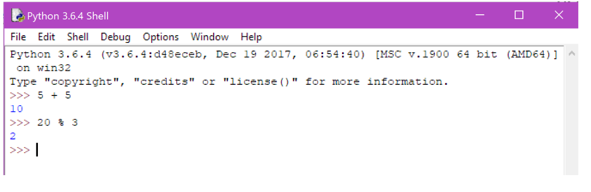

Previous
Next
Numbers
Introduction
Like most programming languages, python can operate and interact with various predefined data types. Including several different types for different kinds of numbers.
Integers
Signed integers, commonly referred to as “ints” are any negative or positive whole numbers. These are represented in python by the reserved word int, followed by a
pair of brackets containing the integer. Although int doesn’t always have to be specified as numbers that do not contain decimal points default to the datatype int.
It does have to be used however if we cant to convert another datatype to an integer equivalent. For example if we have the number 5.7, or the string “5”. Try
playing around with these different data types and the keyword int in the shell, you should get similar results to the ones below.

Floats
Floats, more commonly known in the world of maths as decimals, are floating point numbers, meaning they have a decimal point somewhere in the number. A number can be
a float regardless of the position of the decimal point. For example 5.7 and 0.77802 are both floating point numbers. There are defined in python by the keyword float.
Feel free to try this now in the shell, as see what happens if you enter float(1).

Other Numbers
There are other data types for numbers in python but you will likely hardly ever use them. Like Longs, which are very large integers, though that is mainly used in python 2 as in python 2 integers had a limit in size. There's also a data type for complex numbers. You can read more about these in the documentation section of the python webpage if you ever need to use them.
Operations
Numbers in python have a series of operations that can be performed on them. These include standard mathematical operations like addition, subtraction, multiplication .etc. Some useful operations you may not be aware of include Modulus, represented by a % symbol. This finds the remainder of the vision between the 2 numbers its provided with.